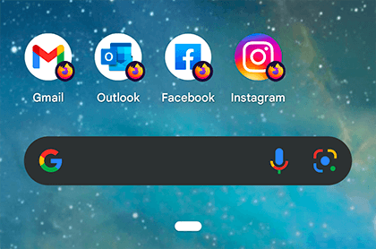
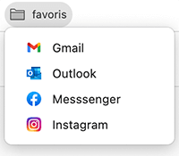

Prenez un instant pour regarder les onglets ouverts dans votre navigateur, vous en avez minimalement un (ce site), mais probablement aussi quelques autres. Remarquez les petits logos dans ceux-ci vous permettant d'identifier rapidement quels sites sont ouverts dans votre navigateur.

Ces icônes sont utilisées à plusieurs sauces afin d’aider à identifier rapidement certains sites dans différents contextes. Par exemple, plusieurs navigateurs proposent une page d’accueil présentant nos sites préférés ou régulièrement visités avec leur icône bien visible.

Les appareils mobiles les utilisent lorsqu'un site est ajouté à l’écran d’accueil.
Les favoris (bookmarks) d’un navigateur les affichent afin d’aider à trouver rapidement le site recherché.
Taille
À la base, les favicons avaient une dimension de 16x16px. Avec l’évolution de leur usage et des appareils, plusieurs formats sont maintenant nécessaires afin d’afficher correctement sur tous les types d'appareils. Il est donc préférable de concevoir un favicon le plus grand possible et de créer des versions de tailles inférieures à partir de celui-ci.
Format
Historiquement les favicons étaient des fichiers .ico puisque ce format était utilisé par Windows afin d’afficher toutes les icônes de son système d’exploitation. Avec le temps, il est maintenant possible d’utiliser tous les formats d’image, sans restrictions. Incluant même le format SVG!
Générateurs
Puisque les tailles optimales de favicon tendent à changer avec l’évolution des appareils, il est préférable d’utiliser un outil de générateur de favicons afin de s’assurer de produire toutes les résolutions de favicons courantes.
Par exemple:
Affichage
Afin de lier un favicon à une page web, il faut ajouter un extrait de code dans sa balise
Par exemple: